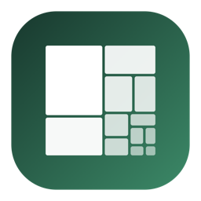
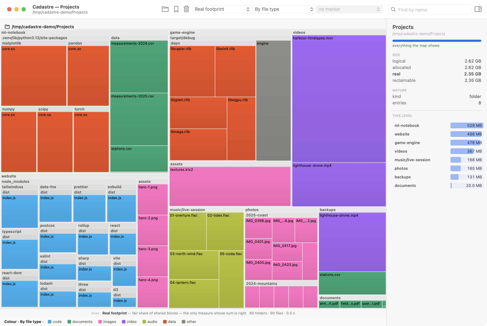
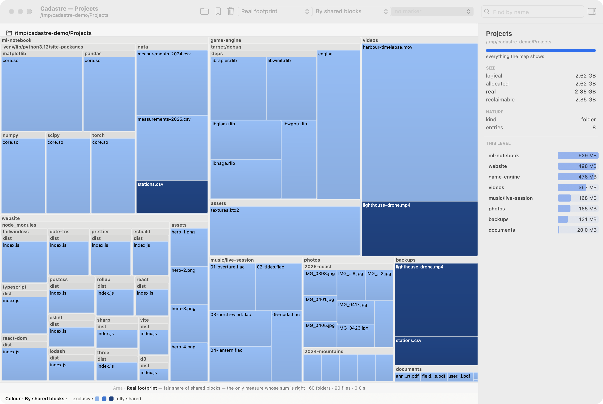
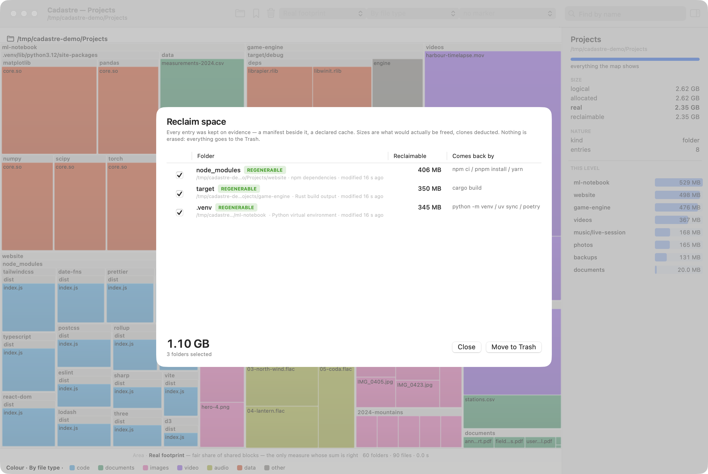
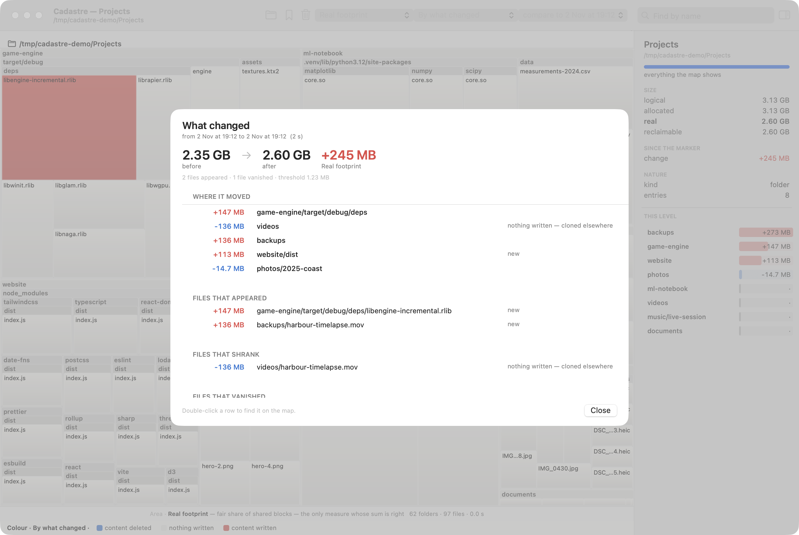

Shared blocks, in pale
Coloured by shared blocks, the map shows which files are clones. Deleting the copy in
backups frees nothing while the original stays — the totals say so, and so does the map.

Disk usage on macOS that tells apart “how big is it” from “what do I get back if I delete it”. On APFS those are two different questions: clones, hard links and shared blocks make the usual tools count some bytes twice and promise space a deletion will never free.
Free and open source (MIT) · macOS 14 or later · signed and notarized · English and French

Logical size, allocated blocks, real footprint, exclusive to the entry, and reclaimable — the last one is what deleting the whole folder actually frees.
Clones, hard links, sparse files and compression are accounted for. Evicted iCloud files are never downloaded to be measured.
Only folders a tool can rebuild, with the proof beside them. Everything goes to the Trash, and ⌘Z puts it back.
Drop a marker, come back later: see where the bytes went, and which folders only look smaller because a file was cloned.
The app’s own binary is cadastre: the same measures, a reclaim report, JSON exports.
It reads file metadata on your Mac. No network, no account, nothing collected. Zero dependencies.
Coloured by shared blocks, the map shows which files are clones. Deleting the copy in
backups frees nothing while the original stays — the totals say so, and so does the map.

The reclaim panel adds up what the checked folders free together, clones deducted, and says
how each one comes back: npm install, cargo build, a new virtual environment.

Against a marker, the map colours the bytes actually written, and the panel lists where they went — telling a real write from accounting that only shifted.

Open the .dmg, drag Cadastre onto Applications. It is signed with a Developer ID and notarized by Apple: it opens with a double click.